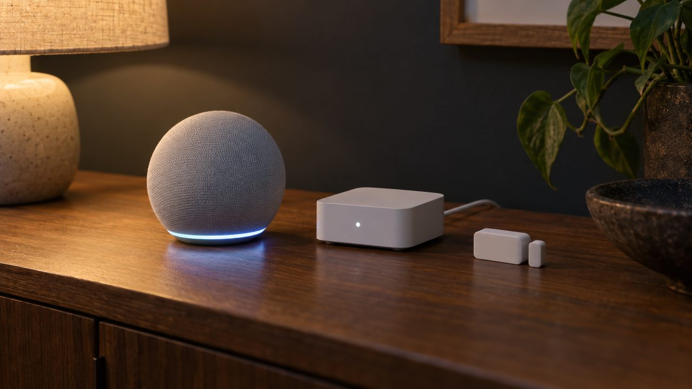
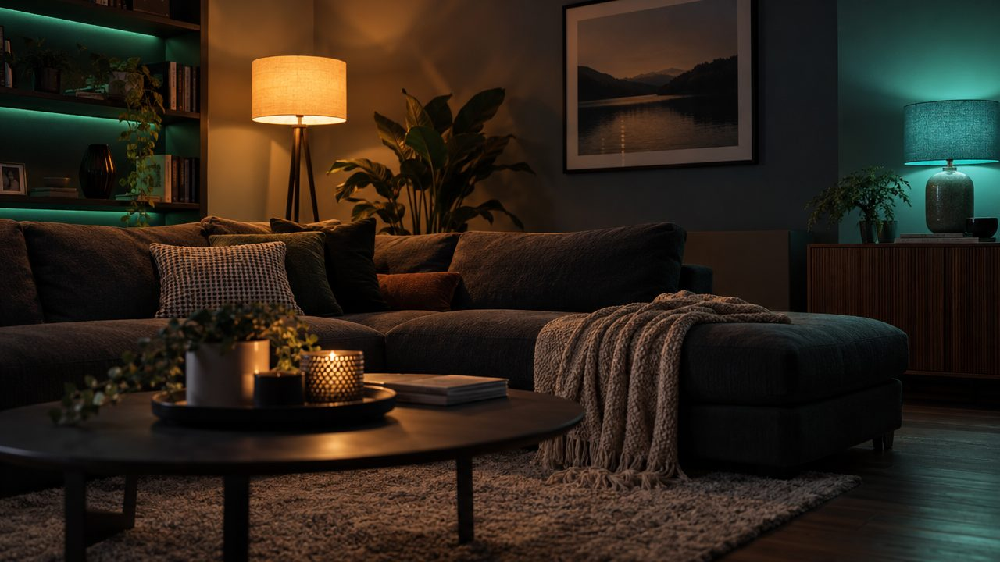
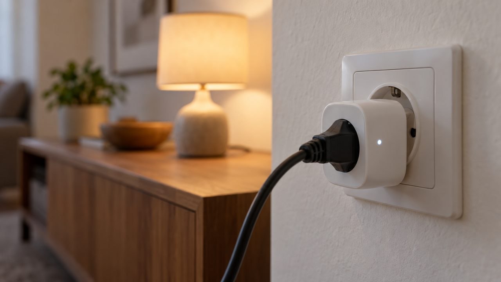
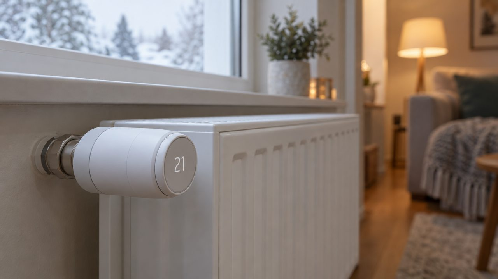
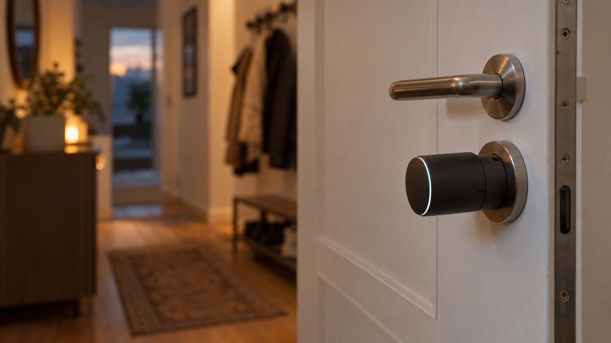
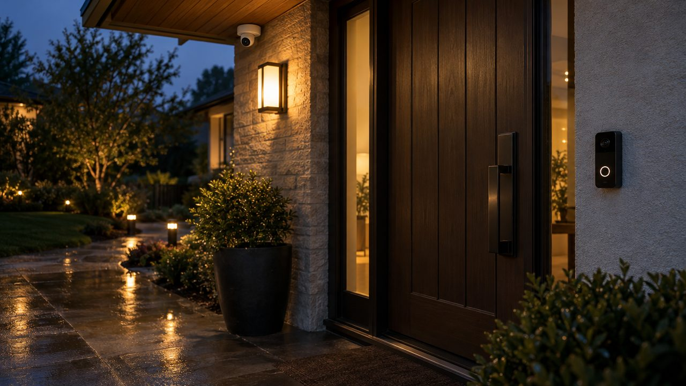
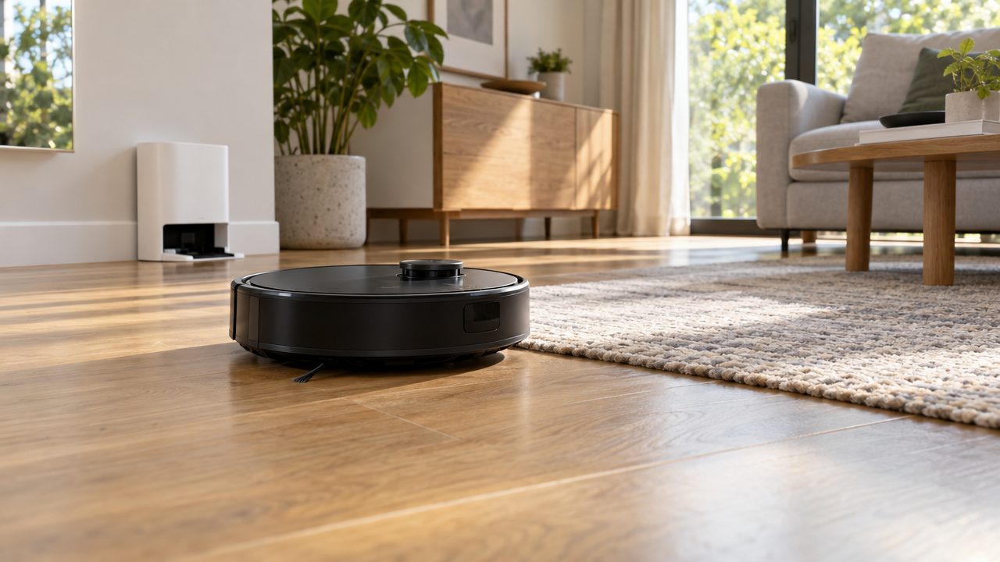
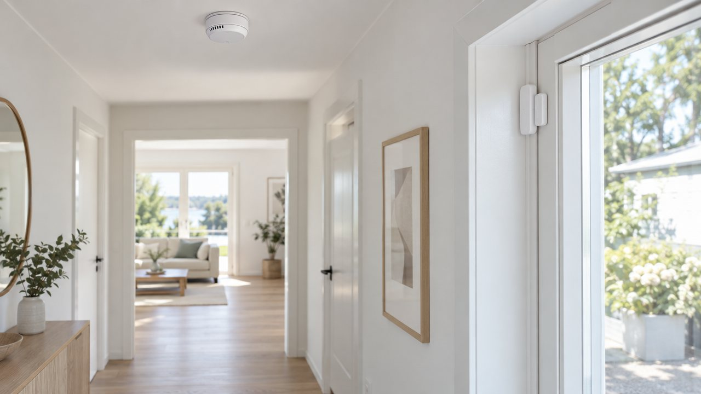
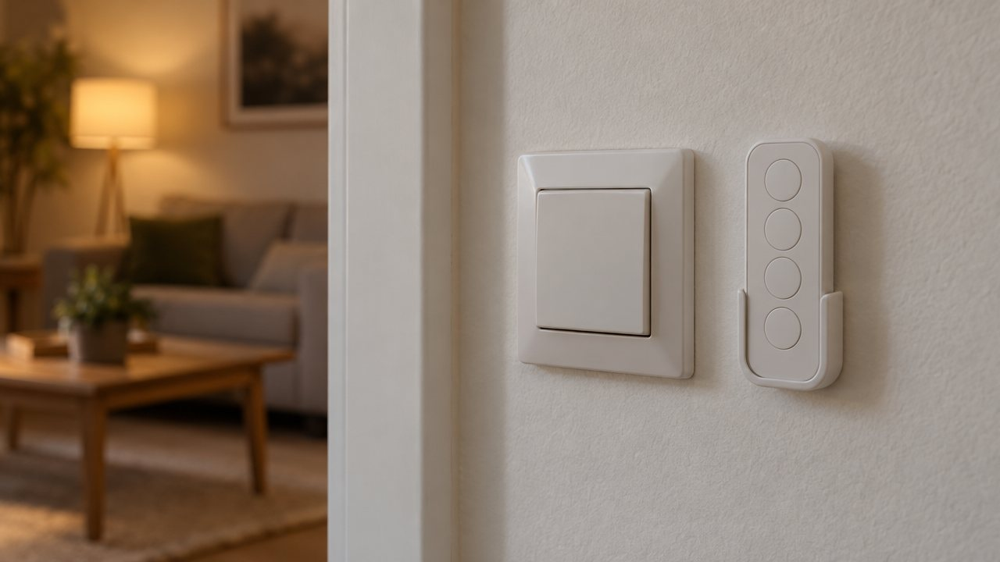
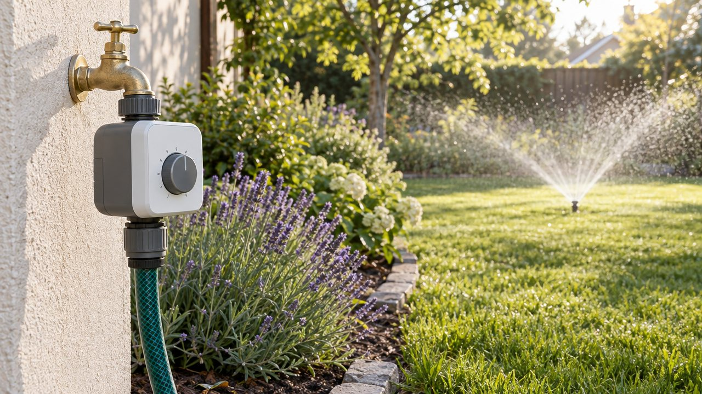

Amazon Alexa
Einsteiger, Android und iPhone
- Stärke
- Riesige Auswahl an Geräten, günstige Lautsprecher
- Schwäche
- Vieles läuft über die Cloud
- Funk
- WLAN, Matter, je nach Lautsprecher Zigbee und Thread
Rechner
Ratgeber
Nachschlagen
Auf dieser Seite
Welches System zu dir passt, was es für Licht, Heizung, Tür und Kamera gibt und welche Geräte ihr Geld wert sind. Für Miete und Eigentum.
Für den Einstieg ins Smarthome reichen ein WLAN, ein Handy und ein erstes Gerät, etwa eine smarte Lampe oder eine Steckdose mit WLAN, die keine Zentrale braucht. Welches System passt, entscheiden meist Handy und Router: Apple Home für das iPhone, FRITZ! für die FRITZ!Box, sonst Alexa oder Google Home. Wer beim Kauf auf den Standard Matter achtet, bleibt flexibel. Das automatische Absenken der Heizung spart laut Verbraucherzentrale 2 bis 8 Prozent der Heizkosten.
Du brauchst kein fertiges Konzept. Fang mit einem Gerät an und bau aus, was sich bewährt.
Was nervt dich am meisten? Kalte Wohnung am Morgen, Licht vergessen, Paket verpasst. Dort fängst du an.
Dein Handy und dein Router entscheiden fast schon. Der Finder nimmt dir die Wahl in fünf Fragen ab.
Eine Lampe oder eine Steckdose mit WLAN läuft in zehn Minuten. Achte bei jedem Kauf auf „Matter“, dann bleibst du flexibel.
Elf Bereiche, vom Lichtschalter bis zur Haustür. Zu jedem steht unten, was es kann, worauf du achtest und welche Modelle wir empfehlen.
Das System ist die App, in der alles zusammenläuft. Du kannst später wechseln, einfacher ist es, gleich passend zu kaufen.
Einsteiger, Android und iPhone
Android-Nutzer
Haushalte mit iPhone
Haushalte mit FRITZ!Box
Tüftler und alle, die unabhängig bleiben wollen
Wer ein System aus einer Hand will
| Funk | Braucht eine Zentrale | Typisch für |
|---|---|---|
| WLAN | Nein | Steckdosen, Lampen, Kameras |
| Zigbee | Ja | Lampen, Sensoren, Schalter |
| Thread | Ja, einen Thread-Router | Neue Sensoren, Schlösser, Thermostate |
| DECT | Ja, die FRITZ!Box | Thermostate und Steckdosen von FRITZ! |
| Matter | Kein Funk, sondern eine gemeinsame Sprache | Macht Geräte in mehreren Systemen nutzbar |
Offene Systeme mit verbreiteten Standards erlauben laut Verbraucherzentrale, Produkte verschiedener Hersteller zu kombinieren. Geschlossene Systeme sind nicht herstellerübergreifend kompatibel.
Fünf Fragen, ein Vorschlag: dein System und die ersten Geräte.
Der Vorschlag folgt festen Regeln: Wer tüfteln mag, bekommt Home Assistant. Mit FRITZ!Box und dem Ziel Heizung FRITZ!. Mit iPhone Apple Home, sonst Alexa oder Google Home.
Die Zentrale verbindet deine Geräte und führt Automationen aus. Ein smarter Lautsprecher kann diese Rolle oft mit übernehmen.

| Modell | Preis | Preis-Leistung | Für wen |
|---|---|---|---|
| Home Assistant Green | 179 € | Sehr gut | Alle, die unabhängig von einer Hersteller-Cloud bleiben wollen |
| FRITZ!Smart Gateway | 69,99 € | Gut | Haushalte mit FRITZ!Box |
| Apple HomePod mini | beim Händler | Gut | Haushalte mit iPhone |
| Google Nest Hub (2. Generation) | 99,99 € | Gut | Android-Haushalte, die Geräte auch per Fingertipp steuern wollen |
| Amazon Echo Dot (Version 2022) | 34,99 € | Sehr gut | Einsteiger, die per Sprache schalten wollen |
Zentrale für Tüftler
179 € UVP laut Hersteller
Für wen: Alle, die unabhängig von einer Hersteller-Cloud bleiben wollen
Dafür
Dagegen
Zentrale für die FRITZ!Box
69,99 € beim Hersteller am 22.11. UVP 79,99 €
Für wen: Haushalte mit FRITZ!Box
Dafür
Dagegen
Lautsprecher und Steuerzentrale
Preis beim Händler ansehen
Für wen: Haushalte mit iPhone
Dafür
Dagegen
Lautsprecher mit Bildschirm
99,99 € UVP laut Hersteller
Für wen: Android-Haushalte, die Geräte auch per Fingertipp steuern wollen
Dafür
Dagegen
Kleiner Lautsprecher mit Alexa
34,99 € beim Hersteller am 23.11. UVP 89,99 €
Für wen: Einsteiger, die per Sprache schalten wollen
Dafür
Dagegen
Der einfachste Einstieg: alte Lampe raus, smarte Lampe rein. Kein Werkzeug, keine Erlaubnis nötig.

| Modell | Preis | Preis-Leistung | Für wen |
|---|---|---|---|
| Philips Hue Starter-Set | 219,99 € | Gut | Alle, die das Licht im ganzen Zuhause ausbauen wollen |
| TP-Link Tapo L530E | beim Händler | Sehr gut | Einsteiger, die eine oder zwei Lampen smart machen wollen |
| Philips Hue White E27 (1.100 Lumen) | 13,19 € | Sehr gut | Der günstige Einstieg in Philips Hue |
2 farbige E27-Lampen und Hue Bridge Pro
219,99 € UVP laut Hersteller
Für wen: Alle, die das Licht im ganzen Zuhause ausbauen wollen
Dafür
Dagegen
Farbige E27-Lampe mit WLAN
Preis beim Händler ansehen
Für wen: Einsteiger, die eine oder zwei Lampen smart machen wollen
Dafür
Dagegen
Einzelne Lampe, warmweiß
13,19 € beim Hersteller am 22.11. UVP 24,99 €
Für wen: Der günstige Einstieg in Philips Hue
Dafür
Dagegen
Ein Zwischenstecker macht fast jedes Gerät schaltbar und zeigt bei vielen Modellen, wie viel Strom es zieht.

| Modell | Preis | Preis-Leistung | Für wen |
|---|---|---|---|
| FRITZ!Smart Energy 200 | 29,99 € | Gut | Haushalte mit FRITZ!Box |
| TP-Link Tapo P115 | beim Händler | Sehr gut | Einsteiger ohne Zentrale |
| Shelly Plug M Gen3 | 9,93 € | Sehr gut | Alle, die mehrere Steckdosen günstig ausstatten wollen |
Steckdose mit Verbrauchsmessung
29,99 € beim Hersteller am 22.11. UVP 39,99 €
Für wen: Haushalte mit FRITZ!Box
Dafür
Dagegen
Kleine WLAN-Steckdose mit Verbrauchsmessung
Preis beim Händler ansehen
Für wen: Einsteiger ohne Zentrale
Dafür
Dagegen
Kleine Steckdose mit Verbrauchsmessung
9,93 € Preis im Shop des Herstellers
Für wen: Alle, die mehrere Steckdosen günstig ausstatten wollen
Dafür
Dagegen
Smarte Thermostate ersetzen den Drehknopf am Heizkörper. Den alten Kopf schraubst du ab, den neuen an. Wasser läuft dabei keines aus.
Laut Verbraucherzentrale spart das automatische Absenken bei Abwesenheit je nach bisherigem Verhalten 2 bis 8 Prozent der Heizkosten. Herstellerangaben zur höchsten Ersparnis solltest du kritisch sehen.

| Modell | Preis | Preis-Leistung | Für wen |
|---|---|---|---|
| FRITZ!Smart Thermo 302 | 44,99 € | Sehr gut | Haushalte mit FRITZ!Box |
| Homematic IP Heizkörperthermostat Evo | beim Händler | Gut | Alle, die ein System ohne Abo aufbauen wollen |
| tado° Smartes Heizkörper-Thermostat X | 54,98 € | Gut | Alle, die Alexa, Google Home oder Apple Home nutzen |
| FRITZ!Smart Control 350 | 25,99 € | Gut | Ergänzung zum FRITZ!-Thermostat |
| Bosch Smart Home Heizkörper-Thermostat II [+M] | 84,95 € | Gut | Alle, die Thermostate mit Fensterkontakten und anderen Geräten verknüpfen wollen |
Heizkörperthermostat
44,99 € beim Hersteller am 22.11. UVP 54,99 €
Für wen: Haushalte mit FRITZ!Box
Dafür
Dagegen
Heizkörperthermostat
Preis beim Händler ansehen
Für wen: Alle, die ein System ohne Abo aufbauen wollen
Dafür
Dagegen
Heizkörperthermostat
54,98 € beim Hersteller am 23.11. UVP 99,99 €
Für wen: Alle, die Alexa, Google Home oder Apple Home nutzen
Dafür
Dagegen
Tür- und Fensterkontakt
25,99 € beim Hersteller am 22.11. UVP 34,99 €
Für wen: Ergänzung zum FRITZ!-Thermostat
Dafür
Dagegen
Thermostat mit Matter
84,95 € Preis im Shop des Herstellers
Für wen: Alle, die Thermostate mit Fensterkontakten und anderen Geräten verknüpfen wollen
Dafür
Dagegen
Ein smartes Schloss sitzt innen auf dem vorhandenen Zylinder und dreht den Schlüssel für dich. Von außen sieht die Tür aus wie vorher.
In einer Mietwohnung bleibt der Zylinder unverändert, das Schloss lässt sich beim Auszug wieder abnehmen. Frag bei Zweifeln trotzdem deinen Vermieter und deine Hausratversicherung.

| Modell | Preis | Preis-Leistung | Für wen |
|---|---|---|---|
| Nuki Smart Lock Pro (5. Generation) | 279 € | Gut | Alle, die Komfort ohne Zusatzkosten wollen |
| Nuki Smart Lock Go | 149 € | Sehr gut | Einsteiger und Mietwohnungen |
Türschloss mit Akku
279 € UVP laut Hersteller
Für wen: Alle, die Komfort ohne Zusatzkosten wollen
Dafür
Dagegen
Türschloss mit Batterien
149 € UVP laut Hersteller
Für wen: Einsteiger und Mietwohnungen
Dafür
Dagegen
Eine Video-Klingel zeigt auf dem Handy, wer vor der Tür steht, auch wenn du nicht zu Hause bist. Kameras behalten Eingang oder Garten im Blick.
Richte Kameras nur auf dein eigenes Grundstück. Gehweg, Straße und das Grundstück der Nachbarn dürfen nicht im Bild sein.

| Modell | Preis | Preis-Leistung | Für wen |
|---|---|---|---|
| Reolink Video Doorbell WiFi | beim Händler | Sehr gut | Hausbesitzer, die kein Abo wollen |
| Reolink Argus 4 Pro | beim Händler | Gut | Garten, Carport und Stellen ohne Steckdose |
| Reolink E1 Pro | beim Händler | Gut | Wohnung, Flur und Haustier im Blick |
Video-Türklingel mit Kabel
Preis beim Händler ansehen
Für wen: Hausbesitzer, die kein Abo wollen
Dafür
Dagegen
Akku-Kamera für draußen
Preis beim Händler ansehen
Für wen: Garten, Carport und Stellen ohne Steckdose
Dafür
Dagegen
Schwenkbare Kamera für innen
Preis beim Händler ansehen
Für wen: Wohnung, Flur und Haustier im Blick
Dafür
Dagegen
Rollläden fahren morgens von selbst hoch und abends herunter. Bei Motor-Rollläden reicht ein kleines Modul hinter dem Schalter, bei Gurten ein elektrischer Gurtwickler.
Unterputz-Modul für Motor-Rollläden
38,90 € UVP laut Hersteller
Für wen: Eigentümer mit Motor-Rollläden
Dafür
Dagegen
Der Link führt zu einer Suche bei Amazon.Anzeige Vor dem Kauf Gurtbreite und Lochabstand des alten Wicklers messen.
Der Roboter saugt, während du weg bist. Viele wischen auch, und eine Station leert den Staubbehälter von selbst.
Stiftung Warentest hat bis 06/2026 insgesamt 44 Saug- und Wischroboter geprüft, sie kosten etwa 240 bis 1.300 €. Der Preis sagt laut den Testern nicht immer etwas über die Qualität.

| Modell | Preis | Preis-Leistung | Für wen |
|---|---|---|---|
| Roborock Qrevo Curv | 599 € | Gut | Wohnungen mit Hartboden und Türschwellen |
| Roborock Saros 10 | 899 € | Gut | Wohnungen mit niedrigen Möbeln |
Saug- und Wischroboter mit Station
599 € beim Hersteller am 22.11. UVP 1499 €
Für wen: Wohnungen mit Hartboden und Türschwellen
Dafür
Dagegen
Flacher Saug- und Wischroboter mit Station
899 € beim Hersteller am 22.11. UVP 1499 €
Für wen: Wohnungen mit niedrigen Möbeln
Dafür
Dagegen
Die Modelle wechseln schnell. Eine gute Grundlage ist der Test der Stiftung Warentest, geprüft wurden dort unter anderem diese drei:
Die Links führen zu einer Suche bei Amazon.Anzeige Die Ergebnisse stehen im Test bei test.de.
Sensoren sind die Sinne des Smarthomes: Sie melden offene Fenster, Bewegung, Rauch oder Wasser und stoßen Abläufe an.

| Modell | Preis | Preis-Leistung | Für wen |
|---|---|---|---|
| Homematic IP Rauchwarnmelder mit Q-Label | beim Händler | Offen | Alle, die mehrere Räume und Etagen gemeinsam absichern wollen |
| Shelly BLU Door/Window ZB | 14,32 € | Sehr gut | Alle, die Fenster überwachen und die Heizung daran koppeln wollen |
Vernetzter Rauchmelder
Preis beim Händler ansehen
Für wen: Alle, die mehrere Räume und Etagen gemeinsam absichern wollen
Dafür
Dagegen
Tür- und Fensterkontakt
14,32 € beim Hersteller am 23.11. UVP 17,90 €
Für wen: Alle, die Fenster überwachen und die Heizung daran koppeln wollen
Dafür
Dagegen
Weitere Geräte für diesen Bereich:
Die Links führen zu einer Suche bei Amazon.Anzeige Vor dem Kauf prüfen, ob der Funk zu deiner Zentrale passt.
Smarte Lampen brauchen Dauerstrom. Ein Funk-Schalter oder ein Modul hinter dem Wandschalter sorgt dafür, dass trotzdem jeder das Licht wie gewohnt bedient.

| Modell | Preis | Preis-Leistung | Für wen |
|---|---|---|---|
| Philips Hue Dimmschalter | 21,99 € | Sehr gut | Mieter und alle, die ohne Kabel einen Schalter mehr wollen |
| Philips Hue Wandschaltermodul | 49,99 € | Gut | Alle mit Hue-Lampen, bei denen der Wandschalter immer wieder versehentlich ausgeht |
Funk-Schalter zum Kleben oder Schrauben
21,99 € Preis im Shop des Herstellers
Für wen: Mieter und alle, die ohne Kabel einen Schalter mehr wollen
Dafür
Dagegen
Modul hinter dem vorhandenen Lichtschalter
49,99 € Preis im Shop des Herstellers
Für wen: Alle mit Hue-Lampen, bei denen der Wandschalter immer wieder versehentlich ausgeht
Dafür
Dagegen
Ein Bewässerungscomputer am Außenhahn gießt nach Zeitplan, auch wenn du im Urlaub bist.

Bewässerungscomputer für den Wasserhahn
99,99 € Preis im Shop des Herstellers
Für wen: Gartenbesitzer mit Rasen und Beeten am Außenhahn
Dafür
Dagegen
Weitere Geräte für diesen Bereich:
Die Links führen zu einer Suche bei Amazon.Anzeige Vor dem Kauf Gewinde des Wasserhahns und Funkreichweite prüfen.
Fertig zusammengestellt aus den Modellen oben. Tippe auf ein Gerät für Preis, Dafür und Dagegen.
Nichts davon braucht eine Zentrale oder Werkzeug, alles zieht mit um.
Der Router ist die Zentrale. Das Gateway brauchst du erst für Zigbee- und Matter-Geräte.
Lokal gesteuert und ohne Abo. Unterputz-Module baut eine Elektrofachkraft ein.
Die Empfehlungen stammen vom Bundesamt für Sicherheit in der Informationstechnik.
Funkgesteuerte Geräte eignen sich laut Verbraucherzentrale für Mietwohnungen: Sie kommen ohne Eingriff in die Bausubstanz aus, lassen sich wieder abbauen und ziehen mit um. Funkbasierte Einstiegssysteme beginnen laut Verbraucherzentrale bei mehreren hundert Euro, fest verkabelte Systeme kosten mehrere tausend Euro. Für Thermostate und Energiemanagement nennt sie eine Förderung über die BEG von bis zu 20 Prozent der Kosten.
Ein WLAN und ein Handy. Für den Anfang reicht eine smarte Lampe oder eine Steckdose mit WLAN, die keine Zentrale braucht. Eine Zentrale lohnt sich, sobald mehrere Geräte zusammenarbeiten sollen.
Eine WLAN-Steckdose oder eine smarte Lampe gibt es schon für kleines Geld. Funkbasierte Einstiegssysteme beginnen laut Verbraucherzentrale bei mehreren hundert Euro, fest verkabelte Systeme kosten mehrere tausend Euro.
Ja. Funkgesteuerte Geräte eignen sich laut Verbraucherzentrale für Mietwohnungen, weil sie ohne Eingriff in die Bausubstanz auskommen und beim Umzug mitkommen. Lampen, Steckdosen, Thermostate und ein Schloss auf dem vorhandenen Zylinder lassen sich wieder abbauen.
Matter ist ein gemeinsamer Standard vieler Hersteller. Ein Matter-Gerät lässt sich in Alexa, Google Home, Apple Home und Home Assistant einbinden, egal von welchem Hersteller es stammt. Steht Matter auf der Packung, bist du bei der Wahl des Systems freier.
Nicht für den Anfang. WLAN-Geräte verbinden sich direkt mit dem Router. Geräte mit Zigbee, Thread oder DECT brauchen eine Zentrale, einen passenden Lautsprecher oder eine FRITZ!Box.
Etwas. Das automatische Absenken bei Abwesenheit spart laut Verbraucherzentrale je nach bisherigem Verhalten 2 bis 8 Prozent der Heizkosten. Wer vorher schon von Hand heruntergedreht hat, spart weniger.
Mit ein paar Regeln ja: für jedes Gerät ein eigenes Passwort, automatische Updates an, und die Geräte in ein eigenes WLAN oder Gäste-WLAN. Das empfiehlt das Bundesamt für Sicherheit in der Informationstechnik.
Das hängt vom Gerät ab. Viele günstige WLAN-Geräte brauchen die Cloud des Herstellers. Systeme wie Home Assistant führen Zeitpläne und Automationen lokal aus und laufen auch bei einem Ausfall weiter.
Wie viel Strom deine Geräte brauchen, steht unter Stromkosten je Gerät. Was smarte Thermostate mit dem Lüften zu tun haben, unter Richtig lüften.
Geprüft am 22.11.2026. Preise sind unverbindliche Preisempfehlungen der Hersteller oder, wo angegeben, der Preis im Shop des Herstellers an diesem Tag. Der Preis im Handel weicht oft ab. „Preis-Leistung“ ist unsere Einschätzung aus Preis und Ausstattung. Wir haben kein Gerät selbst getestet.